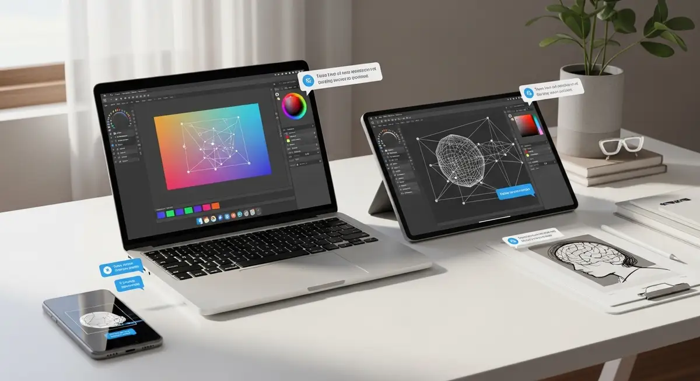

AI and practical use
Clear ways to use AI across real tasks, daily work and better digital decision-making.
Explore guides, categories and useful content on AI, digital tools, creative workflows and better online habits.

This page organizes the main areas of the portal so you can quickly find the kind of content most relevant to your work, projects or digital routine.
Clear ways to use AI across real tasks, daily work and better digital decision-making.
Content on writing, image, video and other tools that support creation and execution.
Better systems, cleaner processes and more useful structures for digital work.
Practical ideas for a healthier and more intentional relationship with the web.
A practical entry point for people who want more useful results from AI without extra noise.
Methods, structures and habits that help reduce friction in day-to-day online work.
Ways to combine writing, image and video tools with more clarity and better output.
Use this area to publish new articles, practical notes, comparisons or tool guides.
Another slot for future content categories, tutorials or structured learning paths.
A simple block for future editorial pieces, recommendations or curated updates.
When you want practical digital resources beyond content, browse the selected products and recommendations available through the portal.